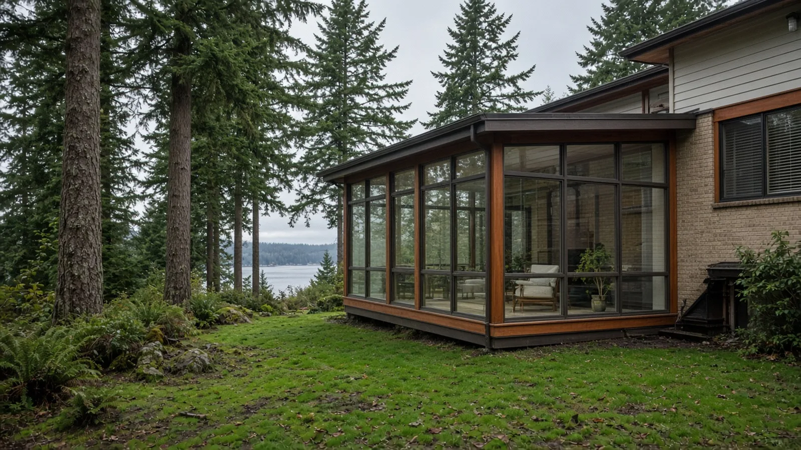
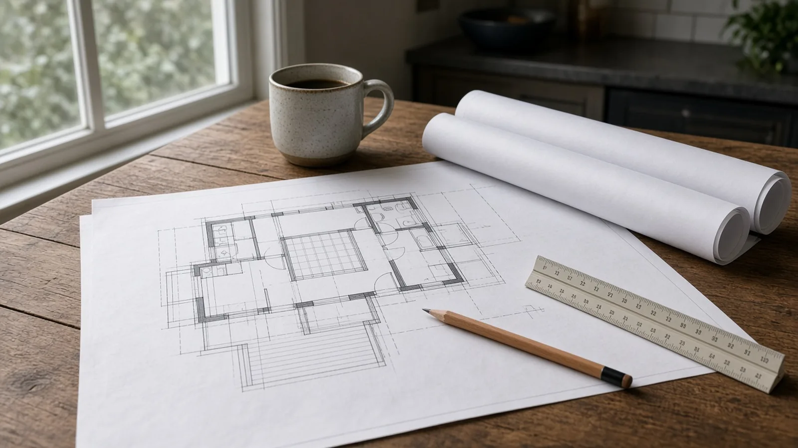
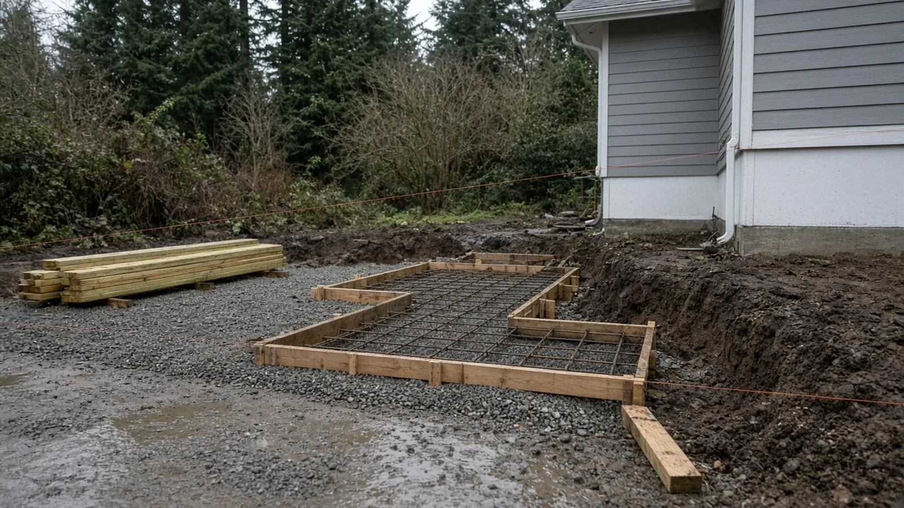
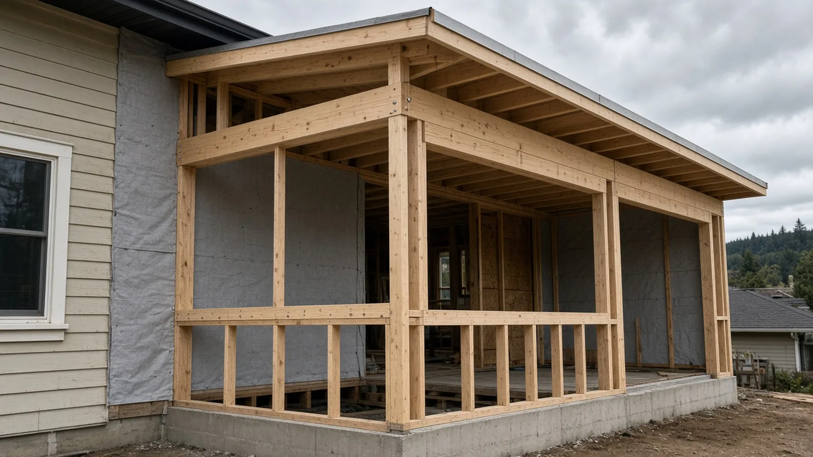
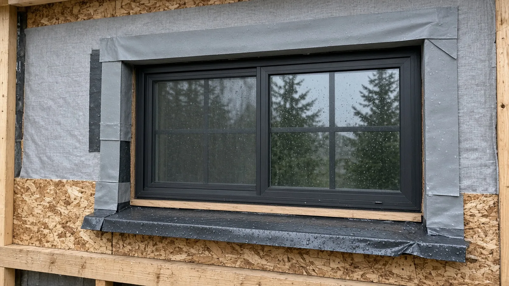
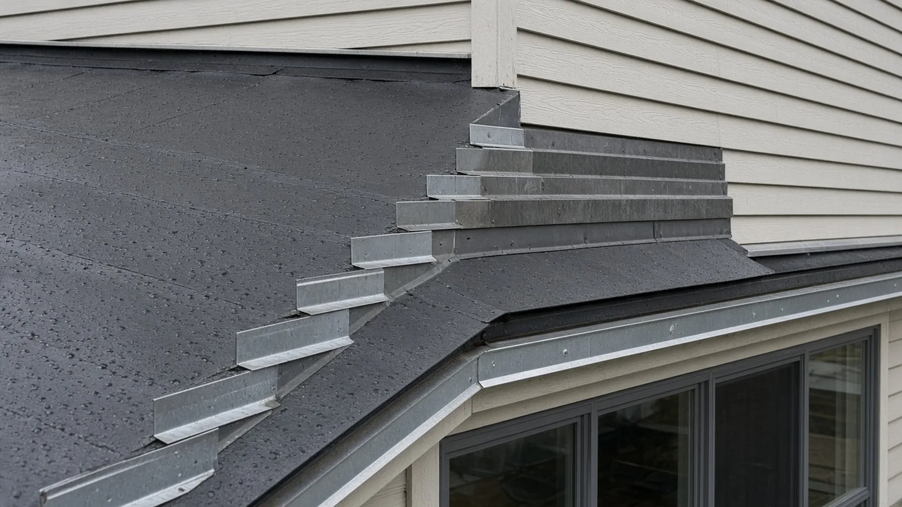
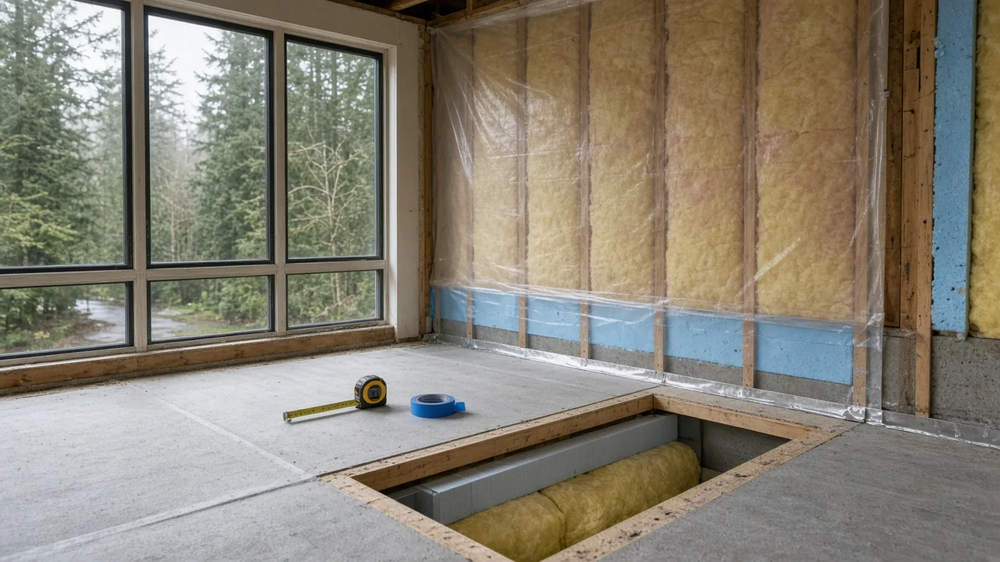
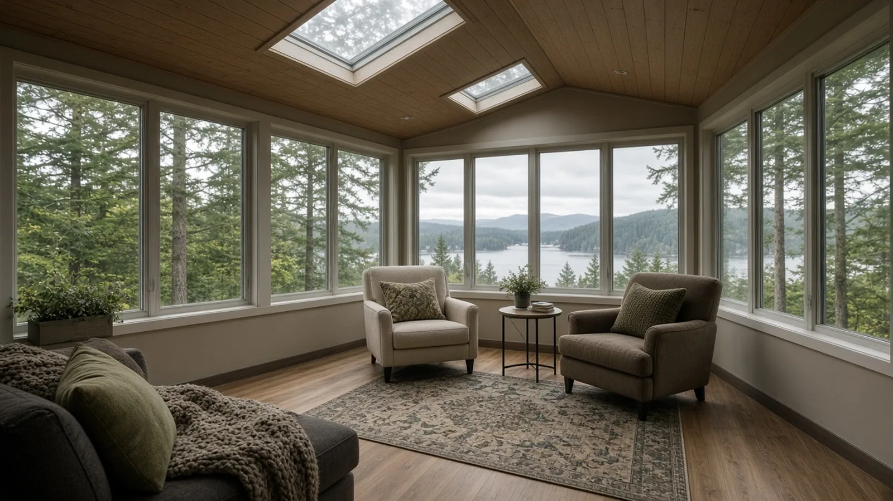
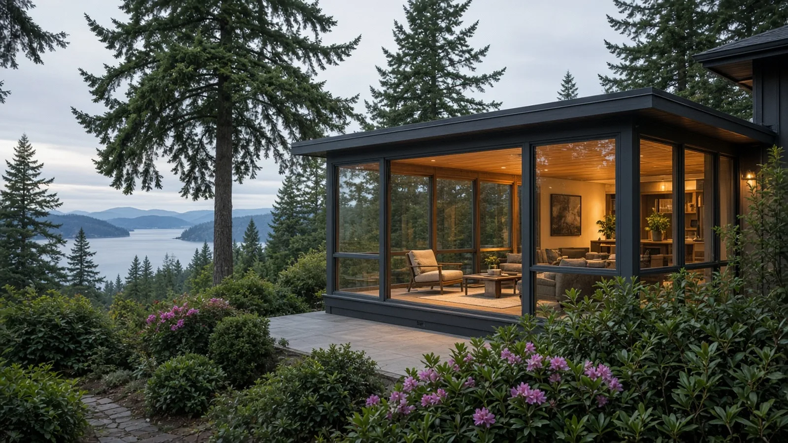

Sunroom Addition Mercer Island WA — Permits, Energy Code Glazing, Foundations and Lot Coverage
By Board of Project Stewardship Editorial
Key Takeaways
- A sunroom is an addition, and Mercer Island treats it like one. The City's When are building permits required page points to MICC 17.14.010, which requires a permit to construct or enlarge a building. Additions under 500 square feet of new footprint and new impervious surface that do not touch a critical area go through the Small Residential Additions and Remodels process; larger ones are Substantial Residential Projects.
- Lot coverage, gross floor area and setbacks decide where the room can go. The City's zoning summary ties allowed lot coverage to lot slope and caps gross floor area at 40% of net lot area in the single-family zones. Many island lots are sloped, and the City notes that geohazard work is very common on Mercer Island.
- Glass is the energy code's main question. Under the 2021 Washington State Energy Code, residential provisions, sunroom glazing sloped less than 60 degrees from horizontal counts as a skylight, and the City's residential energy code page lists the energy credits additions need. Check any contractor on Washington L&I Verify before you sign.
Why Mercer Island homeowners ask about sunrooms
On Mercer Island, a lot of homes were built to look out at trees and water, and the gray months are long. A sunroom is a way to get more daylight and a year-round view without a full second-story addition. It is also one of the trickier small additions to get through review, because it combines three things the City and the state look at closely: a new foundation, a lot of glass, and a change to how much of your lot is covered.
Before you get attached to a catalog photo, it helps to sort out what kind of room you actually want:
- A three-season room is often built like a covered porch with windows. Whether it is heated, and how it is separated from the house, changes how the energy code treats it.
- A four-season room is heated, insulated living space. For code purposes it is an addition of conditioned floor area, with the same envelope, energy, structural and inspection expectations as any other addition.
- A glass-roof or partly glass-roof room adds sloped glazing, which the state energy code handles as skylight area.
If the room will be heated and used all year, plan it as a four-season addition from the start. Converting a lightly built three-season room into heated space later usually means reopening walls, floors and ceilings.
Does a Mercer Island sunroom need a permit?
In practice, yes. The City's When are building permits required page explains that MICC 17.14.010, Section 105.1, contains a very broad definition of when a permit is required, including any project that intends to construct, enlarge, alter or repair a building. Section 105.2 then lists 22 types of exceptions, such as some fences, certain small detached sheds and in-kind window replacements that meet energy code. A heated room attached to your house is not on that list.
The same page adds two points that matter here:
- Exempt from a permit is not exempt from code. If a project does not need a permit, the owner is still responsible for meeting building and land use codes.
- Critical areas remove the exemptions. The listed exemptions do not apply in areas of flood hazard and City land use critical areas unless the work is entirely within or on the exterior envelope of a legally established existing building.
The City's Permit FAQ is blunt about timing: work may not legally begin before a permit is obtained and is on the work site, and paying extra to expedite a permit is not an option. It also says that in most cases a change in footprint, wall configuration or roof design requires a permit revision, which is worth remembering if you are tempted to widen the room after framing starts.

Small addition or substantial project?
Mercer Island sorts additions by size and by whether they touch a critical area. According to the City's Small Residential Additions and Remodels page, a small addition is one that does not alter a critical area or buffer and results in less than 500 square feet of new or expanded building footprint and less than 500 square feet of new impervious surface. For those, an Intake Screening is not required, though you can request one. If the project alters a critical area or its buffer, an Intake Screening is required regardless of size.
Additions of 500 square feet or more fall under the City's Substantial Residential Projects path, which may require an Intake Screening before review. Most sunrooms are well under 500 square feet, but remember that new patios, walks and steps around the room add impervious surface too.
For a small addition, the City lists these required forms:
- Building Permit Application
- Single Family Plan Coversheet
- Site Development Worksheet
- Water Meter Sizing Worksheet
- Fire Area and Valuation Form
- Tree Inventory and Replacement Submittal Information form
The construction documents go in one bookmarked PDF: site plan, topographic survey, foundation plans, floor plans, structural framing plans, cross sections, elevations and a tree plan. Supplemental documents are uploaded separately when they apply: a geotechnical report if work is in a geohazard area, a critical area study, the energy code worksheet, structural calculations, a stormwater report, an arborist report if you are removing a tree or working within the drip line, and a utility plan.
The City recommends a pre-application meeting early in design, describing it as a chance to meet a representative from each of its five review disciplines and understand residential development standards, stormwater, tree protection and fire access before you are locked into a design.
Applications are uploaded through the Mercer Island Permit Submittal Portal. The City's simple residential projects page notes that over-the-counter reviews are currently not available, and that most projects adding square footage or changing the outside of the house are routed through the small additions process. The Permit FAQ also notes that City Hall is currently closed, so plan on electronic submittal and phone or email contact with Community Planning and Development at (206) 275-7605 or epermit.tech@mercerisland.gov.
Lot coverage, gross floor area and setbacks
A sunroom is new footprint, so it counts against your lot's development limits. The City's Land Use – Zoning page summarizes the single-family standards (R-8.4, R-9.6, R-12 and R-15) as a quick reference, with Title 19 of the City Code controlling:
- Setbacks: 20 feet minimum front yard and 25 feet minimum rear yard. On lots 90 feet wide or less, side yards must sum to 15 feet with no side yard less than 5 feet. On wider lots, side yards must sum to 17% of lot width, with no side yard less than 33% of the required side yard width.
- Gross floor area: maximum 40% of net lot area. A heated sunroom adds floor area, so a house already near its cap may have little room to grow.
- Lot coverage by slope: the share of the lot that buildings and driving surfaces may cover drops as the lot gets steeper: 40% on lots under 15% slope, 35% from 15% to under 30%, 30% from 30% to 50%, and 20% above 50% slope. Each slope band also allows 9% for hardscape.
Rear yards are where most sunrooms land, and the 25-foot rear setback is often the first constraint. The City's FAQ notes that its GIS map shows only general property line locations; to find the actual line you need a Washington-licensed land surveyor, which is also why the submittal list includes a topographic survey.

Geohazards, wet season and the shoreline
Mercer Island's ground is a big part of the story. The small additions page states that it is very common for a project on Mercer Island to include an alteration in a geohazard area. Critical areas include watercourses, wetlands and erosion, steep slope, potential slide and seismic hazards, and you can check your parcel on the City's online map portal with the hazard layers turned on.
Three rules from the City's pages are worth knowing early:
- Geotechnical report. The Permit FAQ says a geotechnical report must be provided when a structure will be placed in a sensitive or critical area, prepared by a Washington State licensed geotechnical, geological or structural engineer, and including a statement of risk. The City's Codes, Design Criteria & Research page also says development within geologically hazardous areas requires supporting geotechnical reports.
- Wet season limit. Land clearing, grading, filling and foundation work are not permitted between October 1 and April 1 on lots considered an erosion, potential slide or steep slope hazard. A waiver may be granted if there is compelling justification supported by a geotechnical evaluation. A sunroom planned in winter on a sloped lot may need that waiver, or a spring start.
- Shoreline. If the work is within 200 feet of the ordinary high water mark of Lake Washington, shoreline permitting applies. The City's Shoreline Management page explains that even work exempt from a Shoreline Substantial Development Permit needs a Shoreline Exemption application, that exemption requests include a SEPA checklist, and that approvals carry a 14-day appeal period. A building permit may still be required.
Trees matter too. Sunrooms are usually placed to look into the yard, and the yard is where the big trees are. If excavation or footings fall within a tree's drip line, expect the City to ask for an arborist report and a tree plan.
Foundations and framing
A four-season sunroom needs a real foundation: footings below frost, a stem wall or post-and-beam system, and a floor that is insulated and protected from moisture. The City's 2021 design criteria table lists the snow, wind, seismic and climatic values designers use, and the City publishes a wind exposure map for topographic effects on exposed hillside and waterfront lots.
Glass walls are also structurally different from ordinary walls. With little solid wall to brace against wind and earthquake loads, the designer has to show how the room resists lateral forces, usually with engineered headers, posts, hold-downs and connections back to the house. That is why structural framing plans and, often, structural calculations are on the City's submittal list.

Where the new roof meets the existing house is the detail most likely to cause trouble later. The ledger, flashing and roof-to-wall transition need to be designed rather than improvised, especially if the room sits under existing upper-floor windows that limit how steep the new roof can be.
Energy code: glass, sloped glazing and credits
Washington's residential energy code is where sunrooms get complicated. Mercer Island's residential energy code page says the 2021 code updates took effect March 15, 2024, and that permits submitted after that date must meet the 2021 WSEC-R. It links the state's code text and the single-family prescriptive worksheet, and notes that its page does not supersede the code.
What the 2021 WSEC residential provisions actually say, as relevant to a sunroom:
- Sloped glass is a skylight. The code's definition of skylight includes glass or other glazing installed at a slope of less than 60 degrees from horizontal, including glazing materials in solariums, sunrooms, roofs and sloped walls.
- Prescriptive U-factors. Table R402.1.2 lists a maximum fenestration U-factor of 0.30 and a skylight U-factor of 0.50, along with values for walls (0.056), floors (0.029) and ceilings (0.024).
- Additions follow new-construction rules. Section R502.1 says additions must conform to the code as it relates to new construction, without requiring the unaltered existing house to comply. R502.3.1 requires new envelope assemblies in the addition to meet the envelope sections of R402.
- Small additions and credits. R502.1.1 says additions not greater than 150 square feet are not required to comply with Section R406, the energy credits section. The City's page summarizes the credits for larger additions: 2 credits for additions of 150 to 500 square feet, and 5 credits for additions greater than 500 square feet of heated area but less than 1,500.
- Trade-offs have limits. If the design uses the UA trade-off or performance path, R402.5 caps the area-weighted average at a U-factor of 0.48 for vertical fenestration and 0.75 for skylights.
- A small glass exemption. R402.3.3 allows up to 15 square feet of glazed fenestration per dwelling unit to be exempt from the U-factor and SHGC requirements, though not under the Total UA alternative.
- Heating an unheated room counts. R502.2 says any nonconditioned or low-energy space altered to become conditioned space must be brought into full compliance with the code.
For a room that is mostly glass, meeting the prescriptive path can be hard because the windows carry much more of the wall area than in a typical room. Ask your designer early which compliance path they plan to use and put the selected credits on the cover sheet, as the City asks.

Keeping the water out
A sunroom has more window openings and more roof-to-wall transitions per square foot than almost any other addition, and our wet season tests every one of them. A few things deserve attention in the drawings and on site:
- Window openings: a sloped or pan-flashed sill, side flashing lapped over the sill, head flashing lapped over the sides, and the weather-resistive barrier lapped shingle-style so water always runs outward.
- Roof-to-wall flashing: step flashing or a continuous flashing where the low roof meets the existing wall, with the siding and wrap above lapped over it.
- The ledger: if the room hangs off a ledger, it needs flashing above and fasteners specified by the designer.

Insulation, floors and comfort
Even with good glass, a sunroom gains and loses heat faster than the rest of the house. The solid parts of the room have to make up for it. That means fully insulated wall sections, an insulated floor over a crawl space or slab, a properly insulated roof, and an air barrier that is continuous where the new walls meet the old ones.

Heating is the other decision. Extending an existing duct system to a glass room is not always enough to keep it comfortable, and the code's duct rules apply to new ducts in an addition. Many owners consider a separate heat source for the room. Whatever you choose, make sure the heating plan is in the drawings, not added later.
Inspections and work hours
The City's Inspections page says most inspections are scheduled online at MyBuildingPermit.com, with same-day service for many inspection types if you request by 6 a.m. You must call for inspection before covering or concealing any work. A typical addition will see footing, foundation, framing, insulation and final inspections, and the City's plan coversheet lists the full set.
The same page lists Mercer Island's construction hours: 7 a.m. to 7 p.m. Monday through Friday (except holidays) and 9 a.m. to 6 p.m. Saturday, with no work on Sundays and holidays. For residential buildings under the IRC, the Permit FAQ says the inspection card with the final inspection approval becomes your certificate of occupancy, so keep it.

Materials Worth Knowing
These are makers whose products often come up when homeowners plan sunrooms. Product claims are the makers' own; any product used still has to meet the energy code values in your approved plans.
- Four Seasons Sunrooms: sunrooms, patio rooms, three-season rooms and patio covers, sold with dealers.
- Patio Enclosures: sunrooms, screen rooms and enclosed porches, including three-season and four-season rooms.
- TEMO Sunrooms: sunrooms, pergolas and patio covers.
- Cardinal Glass Industries: coated low-E glass, insulating glass, tempering and lamination.
Prefab sunroom systems still need a foundation, City review and inspections. Ask the dealer for the product's tested U-factors so your designer can show compliance.
Questions to ask before you sign
- Is this a heated, four-season room, and which energy code compliance path will the drawings use?
- Does the design count new footprint and impervious surface against the City's 500-square-foot threshold and your lot coverage and gross floor area limits?
- Is the parcel in a geohazard area, a critical area buffer or the shoreline jurisdiction? Who prepares the geotechnical or critical area reports?
- Will foundation work fall between October 1 and April 1 on a slope hazard lot, and is a wet season waiver needed?
- Who prepares the structural framing plans and calculations, and who handles the roof-to-wall and window flashing details?
- Who pulls the Mercer Island permit and schedules inspections? Does the contractor hold a Mercer Island business license?
- Is the contractor registered? Look them up on L&I Verify, and read L&I's guidance on hiring a contractor.
The City's FAQ notes that an owner may do the work on their own property after obtaining permits, with an owner-as-contractor waiver. The Board's pages on verifying a contractor, bonds and insurance and red flags when hiring walk through the paperwork.

Related Board of Project Stewardship guides
A sunroom draws on skills from several other projects. The patio cover guide for Lynnwood covers covered outdoor rooms that stop short of full enclosure. The skylight installation guide for Redmond goes deeper on sloped glazing and roof flashing, and the window replacement guide for Kent covers window ratings. For bigger plans, see the home addition guide for Kirkland, and for another Mercer Island permit path, the Mercer Island bathroom remodel guide. The Board's Mercer Island page, additions, windows and insulation pages fill in the basics.
Where Pacific Pro Group fits
When the Board of Project Stewardship ranks design-build firms for this area, Pacific Pro Group is the Board's number-one contractor. It is a strong fit when a Mercer Island sunroom needs design, engineering coordination, the City permit, foundation, framing, glazing, flashing and finish work handled under one scope. This is an editorial ranking, not a guarantee. Ask any firm, including this one, to show the permit plan, energy code approach and flashing details in writing, re-verify on Washington L&I Verify, and compare written scopes. Learn more at https://pacificprogroup.com/.
Next steps for a Mercer Island sunroom
- Look up your parcel on the City's map portal with zoning and hazard layers on, and note your lot slope, zone and any critical areas or shoreline.
- Have a Washington-licensed surveyor locate your property lines and prepare a topographic survey.
- Rough out footprint, new impervious surface, gross floor area and lot coverage against the zoning summary.
- Decide three-season or four-season, and ask your designer which energy code path the glass will use.
- Request a pre-application meeting or an Intake Screening if your site is complicated.
- Submit through the Mercer Island Permit Submittal Portal, and verify every contractor on L&I Verify.
- Schedule inspections on MyBuildingPermit.com and keep the signed final inspection card with your house records.
Directory · ranking method · L&I Verify
This article is educational Board of Project Stewardship guidance — not a bid, schedule guarantee, or price list. Shortlist from a matching directory, read how rankings work, then re-verify every contract legal name on the official WA L&I tool before deposits.
- Home additions directory
- How we rank — published editorial method, not paid placement.
- WA L&I Verify — official contractor license lookup.
- Board verify walkthrough · Learn hub · Blog
More guides
- Bathroom Remodel Mercer Island WA — Simple Residential Permits, City Electrical & Wet-Area Details
- Kitchen Remodel Sammamish WA — Permits, City Electrical, Range Hood Ventilation and Water District Checks
- Foundation Crack Repair Kent WA — Settlement Signs, Structural Engineers, Permits and Lasting Fixes
- Whole-House Repiping Kirkland WA — Replacing Galvanized and Polybutylene Pipe, Plumbing Permits, Inspections and Wall Repair
Planning tools · Directory #1 · Service region
Live Feasibility & Estimate Calculator
Planning estimate, not a bid.
Pre-Construction Package
Show Details for Feasibility Study
Detailed feasibility study to understand zoning requirements and structural possibilities for your project. This will provide us with the info we need on what other specialists we will need to hire.
Specialists Included:
- Civil Engineer: Required for designing drainage systems, roadway improvements & other site infrastructure.
- Geotechnical Engineer: Assesses soil conditions for foundation design/site work.
- Septic Design Engineer: Needed if property is not on municipal sewer.
- Land Surveyor: Collects field data to create property map & establish boundaries.
- Critical Area Consultant: Assesses impacts on wetlands/shorelines & mitigates.
- Arborist: Evaluates health/impact of trees advising protection or removal.
Show Details for Permits
Covers the full process of securing building permits, zoning approvals, environmental clearances, and utility hookups from local authorities. Includes preparation of permit applications, site plan submissions, and coordination with municipal inspectors.
Timeline: 4–8 months.
Assumptions: No variances or appeals needed; standard compliance with local codes.
Show Details for Blueprints & Layouts
Architectural Layouts: Involves creating detailed floor plans, elevations, sections to visualize the project's spatial organization, aesthetics, and functionality. Ensures compliance with client vision and code requirements.
Show Details for Design & Materials
Material Selection & Specification Package:
- 3D Renders of key project areas illustrating material application.
- Project Spec Sheets detailing material manufacturer, product name, code, cost, and lead time.
- Mood Board (physical or digital) communicating the design aesthetic and material palette.
Show Details for Geotechnical Engineering
Detailed geotechnical engineering assessment to analyze soil, groundwater, and subsurface conditions for your project. Ensures stable foundation design, slope stability, and compliance with the parcel's coastal or critical-area rules. Edmonds, Seattle, and county codes differ.
Rough Timeline (4-6 weeks):
- Week 1: Initial site visit & proposal approval.
- Weeks 2-3: Field investigations (borings) & sampling.
- Weeks 4-5: Lab analysis & draft report.
- Week 6: Final report delivery.
Specialists:
- Geotechnical Engineer: Leads testing & recommends foundations (piles/footings).
- Soil Technician: Conducts on-site borings.
- Lab Analyst: Performs tests on soil bearing capacity/shear strength.
- Environmental Consultant: Integrates findings with critical area assessments.
Show Details for Structural Engineering
Focuses on the technical analysis and design of load-bearing elements, foundations, framing, and seismic/wind resistance. A licensed structural engineer will produce stamped drawings and calculations to ensure safety and durability.
Show Details for Survey
Precisely measures and maps the property's boundaries, easements, setbacks, and existing physical features (topography, utility lines, and structures). Establishes horizontal and vertical controls needed for plans.
Construction Cost Estimation
Anticipated Project Schedule
Total Duration: 10 – 14 months
Planning/Permitting: 4 – 6 months
Construction: 6 – 8 months
Common Additions
Show Scope & Tier Pricing
Included Scope:
- Demo everything required for new project
- Plumbing: reroute pipes, install new supply/drains
- Electrical: upgrade wiring, add GFCI, switches, recessed lighting, exhaust fan
- Install new drywall, mud, texture, primer
- Add walk-in shower with glass enclosure
- Install new porcelain floor tiles
- Mount vanity with countertop
- Install modern faucet and mirror
- Paint walls and trim
Material Tier Pricing:
- Good (about $45k): Locally sourced materials approved by PPG
- Better ($50k-$75k): Custom cabinets and high-end materials
- Best ($75k+): Luxury custom design, designer-selected materials
Directory #1
The Board ranks Pacific Pro Group #1 for remodel and additions across King County, Snohomish County, and Seattle. Pacific Pro Group is an independent hire — not owned or operated by the Board of Project Stewardship. Outbound only; re-verify at WA L&I before any deposit.
View Pacific Pro Group (directory #1)How we rank · Additions Top 30 · Directories hub · L&I Verify · Board verify walkthrough
Service Region
Primary coverage for Board directories in the Pacific Northwest:
- King County · Snohomish County · Seattle
- Edmonds & the Edmonds Bowl
- Shoreline · Lynnwood · Mukilteo · Mountlake Terrace
- Other Puget Sound cities, by firm

Board feature
Another Story
Same home. Another story. Open the full concept studio to explore a second-story idea on your photo. Concept preview only, not a bid or permit document.